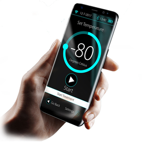

Cryothérapie à Corps Entier
Go Cryo est le premier centre de Cryothérapie à Corps Entier (CCE) de Serre-Chevalier et du Briançonnais. Il a été créé par Léo Meyer, ostéopathe depuis 20 ans, pour permettre aux sportifs et au grand public de bénéficier de cette thérapie puissante et novatrice.

AUTRES SOINS

CRYOTHERAPIE

CRYOLIPOLYSE